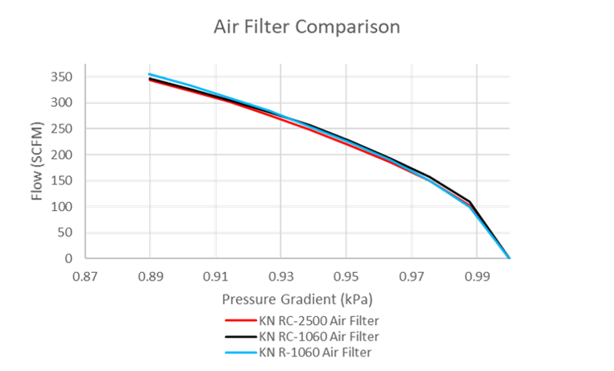
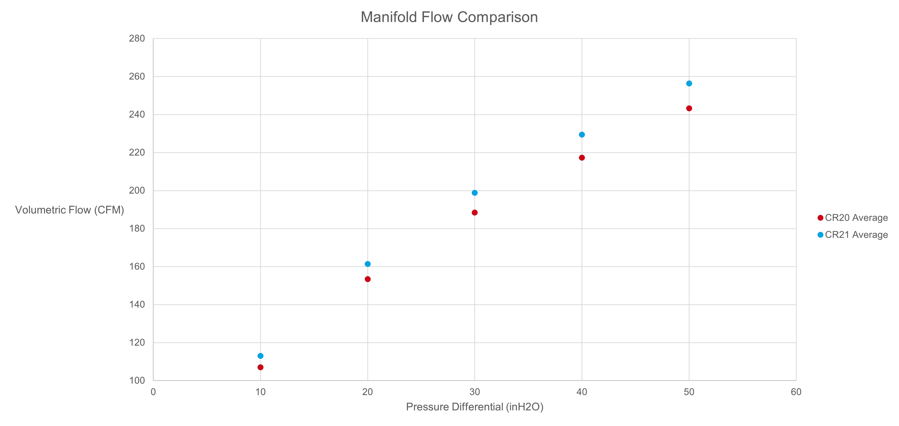

Intake
- Main goals of intake:
- Maintain serviceability, increase where possibleImprove manufacturabilityIncrease engine output at peak 12000 RPM
The current objectives for the powerplant system is to improve the engine output in the range of 8000-11000 RPM due to the current engine gearing, maintain reliability, and improve manufacturing ease and tolerances.
Parts Overview
Intake Manifold
Throttle Assembly
Air Filter
Restrictor
Plenum
Runners
Manufacturing/Servicing
I’m not downloading all of those images elliot. Sorry :/
Components
Air Filter
K&N RC 2500 Air Filter
Flow bench data shows that three K&N filters have very similar flow properties, lightest one was chosen (0.2 vs 0.4 lbs)
{kind=link}
Throttle Body
Goals for Throttle Body
- Proper incorporation of the Bosch 40 mm electronic throttle body and mechanical throttle body and freedom with the use of a Wiggin’s clamp at the base of the restrictor.
Restrictor
- Analysis must be completed with regards to diffuser length and its effect on pressure recovery as well as varying throat geometry and location along the length of the duct. Results must show a comparison of hand calculations, CFD results, and flow bench results.
- CFD Run Conditions:
- •Energy equation used•K-epsilon Turbulence model•Density based•Axisymmetric•Pressure inlet•101,300 KPa•300 K•Pressure outlet•12.5 KPa gauge pressure•300 K•Ideal gas•Boundary conditions•Wall•Axis•Inlet•outlet
{kind=link}
{kind=link}
Plenum
Goals for Plenum
- In an effort to reduce weight and lower powertrain cg the plenum should be made from carbon fiber. Alternatively, 3d printing is an option.
Runners
Goals for Runners
- Bellmouth design needs to be re-evaluated and confirmed using both CFD and physicaltesting on a flow bench.
- The taper of the runners needs to be evaluated from both a performance and manufacturing standpoint and tested on a flow bench.